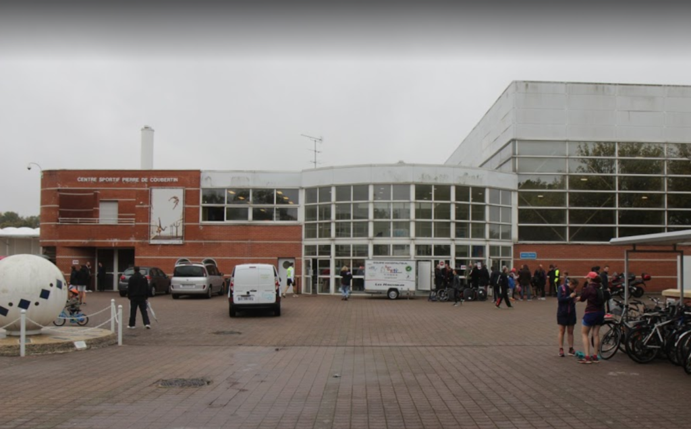

Différents gymnases
coubertin
Voici le gymnase coubertin et son itinéraire depuis le lycée technologique.


jean marechal
Voici le gymnase jean maréchal et son itinéraire depuis le lycée technologique.


Le gymnase coubertin est plus loin que celui de jean marechal en partant du batiment technique
Lycée Emilie de Breteuil